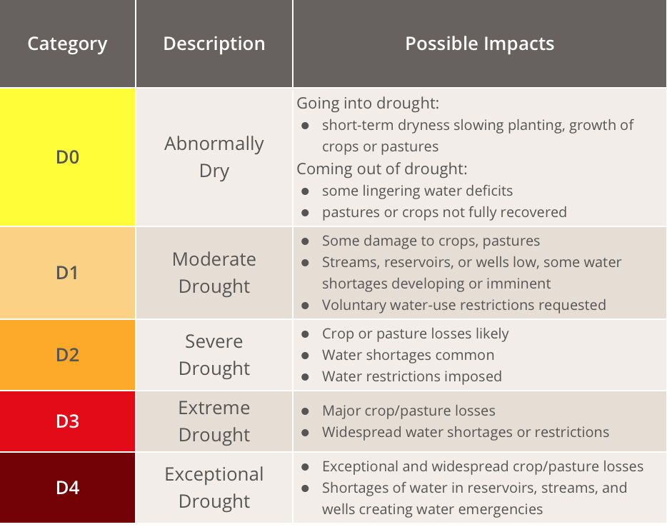

Drought in Texas
YICHUN LU
Introduction
Texas is no stranger to drought: the state has faced several droughts in recent decades, including the most recent and most severe drought that began in 2011.Texas has faced increasing demand for water to meet the needs of its rapidly growing population. Moreover, climate change has led to Texas experiencing an increase in drought events since 2011, which has intensified the need for an effect solution for state’s water situation. (Waterdatafortexas.org, 2017)
Texas is the second-largest state in the United States and the total area is 268,596 sq. miles (Texasalmanac.com, 2017) so that it is difficult to conceptualize the degree of drought without a visual representation. In particular, spatial and temporal visualization can improve our knowledge on the intensity of the drought’s implication on the area throughout Texas. For visualization, the manner of the exploratory focus should be clearly investigated, where factors causing drought range from “Temperature” to “Precipitation” will be analyzed.
Analysis on the relationships between factors of drought, and the spread of the drought area, will be investigated.
Packages, data and preprocessing
Required packages
# packages installment
library(rmarkdown)
library(gridExtra)
library(ggplot2)
library(rgdal)
library(dplyr)
library(DT)
library(leaflet)
library(weathermetrics)
library(xts)
library(htmlwidgets)
library(widgetframe)
library(dygraphs)
library(zoo)
library(tigris)
knitr::opts_chunk$set(cache=TRUE)Data
- Texas boundary shape file
The shape file was downloaded from Census Bureau’s MAF/TIGER database and loaded by function readOGR.
# load texas shp file
shp <- readOGR(dsn=path.expand("data/bnd_tx/txdot-counties/txdot-2015-county-generalized_tx.shp"))
knitr::opts_chunk$set(cache=TRUE)- Drought severity classification data
Downloaded from The National Drought Mitigation Center. It is a weekly map that the data is calculated based on measurements of climatic, hydrologic and soil conditions as well as reported impacts and observations from contributors around the country.(USDM, 2017)
Permission: The U.S. Drought Monitor is jointly produced by the National Drought Mitigation Center at the University of Nebraska-Lincoln, the United States Department of Agriculture, and the National Oceanic and Atmospheric Administration. Map courtesy of NDMC-UNL.
Data ranged from January 5 2010 to November 28 2017, including dates and drought classification results. The classification system and its meaning are shown as below. 
# us monitor data loading
tx_7y <- read.csv('data/tx_7y.csv')
tx_7y_1 <- read.csv('data/tx_7y.csv')
tx_1031 <- read.csv('data/tx_1031.csv')
# show the data table
datatable(data=tx_7y_1[,c(-2,-3,-9,-10,-11)],style = 'default',options = list(pageLength = 5,autoWidth = TRUE))Unluckily, the drought index for each county by state can be downloaded just in single day, therefore, I chose the data released in October 31 as sample.
- Time-series data
Downloaded from US Climate Division, including temperature, precipitation and Palmer Drought Severity Index(PDSI) from 2000 to October 2017. PDSI is a standardized index that spans -10 (dry) to +10 (wet) which uses available temperature and precipitation data to estimate relative dryness and it is a standardized index that spans -10 (dry) to +10 (wet).(PDSI, 2017) These data are shown online just like text, hence I collected them with Excel and loaded with read.csv function.
# data2 temp$precip data loading
min_mean <- read.csv('data/minmean.csv')
max_mean <- read.csv('data/maxmean.csv')
precip <- read.csv('data/precip.csv')
drought <- read.csv('data/drought.csv')
total <- read.csv('data/total.csv')
# show the data table
datatable(data = total,
options = list(pageLength = 12),
colnames = c('Month', 'Mean Temperature (C)', 'Precipitation (cm)', 'Palmer Drought Index'))Preprocessing
- Link shape file and drought classification data
tx <- as.data.frame(tx_1031)
shp@data = data.frame(shp@data, tx_1031[match(shp@data[["FIPS"]], tx_1031$FIPS),])
# link shapefile with datatable
shp2 <- fortify(shp)
shp$id <- row.names(shp)
shp2 <- left_join(shp2,shp@data,by="id")- Convert character type into date type
# convert table and date formet
as.data.frame(tx_7y)## ReleaseDate StateAbbreviation None D0 D1 D2 D3 D4
## 1 20171128 TX 28.73 36.15 29.61 5.50 0.00 0.00
## 2 20171121 TX 40.02 39.75 16.98 3.25 0.00 0.00
## 3 20171114 TX 54.34 30.40 14.30 0.97 0.00 0.00
## 4 20171107 TX 58.23 32.97 8.24 0.56 0.00 0.00
## 5 20171031 TX 71.18 26.30 2.41 0.11 0.00 0.00
## 6 20171024 TX 80.89 17.37 1.74 0.00 0.00 0.00
## 7 20171017 TX 80.83 14.85 4.32 0.00 0.00 0.00
## 8 20171010 TX 87.34 9.35 3.31 0.00 0.00 0.00
## 9 20171003 TX 86.76 11.04 2.20 0.00 0.00 0.00
## 10 20170926 TX 70.54 25.29 4.13 0.04 0.00 0.00
## 11 20170919 TX 79.27 17.46 2.92 0.35 0.00 0.00
## 12 20170912 TX 92.45 6.03 1.48 0.04 0.00 0.00
## 13 20170905 TX 94.84 4.36 0.75 0.04 0.00 0.00
## 14 20170829 TX 96.14 2.99 0.87 0.00 0.00 0.00
## 15 20170822 TX 86.44 11.09 2.47 0.00 0.00 0.00
## 16 20170815 TX 89.71 9.05 1.23 0.00 0.00 0.00
## 17 20170808 TX 79.97 15.74 4.29 0.00 0.00 0.00
## 18 20170801 TX 73.48 16.62 9.17 0.73 0.00 0.00
## 19 20170725 TX 75.04 15.96 7.73 1.26 0.00 0.00
## 20 20170718 TX 74.42 17.73 7.39 0.46 0.00 0.00
## 21 20170711 TX 76.12 17.31 6.57 0.00 0.00 0.00
## 22 20170704 TX 73.51 20.48 5.08 0.92 0.00 0.00
## 23 20170627 TX 76.48 17.54 5.37 0.61 0.00 0.00
## 24 20170620 TX 72.65 22.50 4.84 0.00 0.00 0.00
## 25 20170613 TX 78.23 19.31 2.47 0.00 0.00 0.00
## 26 20170606 TX 83.43 15.41 1.16 0.00 0.00 0.00
## 27 20170530 TX 65.50 30.80 3.70 0.00 0.00 0.00
## 28 20170523 TX 77.70 19.89 2.22 0.19 0.00 0.00
## 29 20170516 TX 65.58 28.27 4.95 1.20 0.00 0.00
## 30 20170509 TX 78.86 18.82 2.33 0.00 0.00 0.00
## 31 20170502 TX 91.38 7.18 1.44 0.00 0.00 0.00
## 32 20170425 TX 90.58 8.08 1.34 0.00 0.00 0.00
## 33 20170418 TX 90.30 8.16 1.54 0.00 0.00 0.00
## 34 20170411 TX 84.74 13.55 1.70 0.01 0.00 0.00
## 35 20170404 TX 82.49 14.59 2.91 0.01 0.00 0.00
## 36 20170328 TX 55.06 36.27 8.26 0.40 0.00 0.00
## 37 20170321 TX 53.46 37.91 7.70 0.93 0.00 0.00
## 38 20170314 TX 65.12 30.36 3.58 0.93 0.00 0.00
## 39 20170307 TX 70.92 24.43 3.72 0.93 0.00 0.00
## 40 20170228 TX 75.50 20.57 2.92 1.01 0.00 0.00
## 41 20170221 TX 91.57 6.36 1.25 0.82 0.00 0.00
## 42 20170214 TX 88.14 8.17 2.42 0.73 0.53 0.00
## 43 20170207 TX 90.56 6.04 2.19 1.03 0.19 0.00
## 44 20170131 TX 92.34 4.25 2.32 1.08 0.01 0.00
## 45 20170124 TX 92.24 4.57 2.11 1.08 0.01 0.00
## 46 20170117 TX 82.78 13.20 3.07 0.79 0.15 0.00
## 47 20170110 TX 74.87 19.10 5.15 0.75 0.14 0.00
## 48 20170103 TX 81.50 12.20 4.33 1.93 0.04 0.00
## 49 20161227 TX 75.85 17.18 5.19 1.74 0.04 0.00
## 50 20161220 TX 79.50 12.98 5.58 1.90 0.04 0.00
## 51 20161213 TX 80.86 11.78 5.42 1.90 0.04 0.00
## 52 20161206 TX 81.90 13.23 4.22 0.62 0.03 0.00
## 53 20161129 TX 66.37 19.44 10.92 3.19 0.08 0.00
## 54 20161122 TX 66.53 18.73 6.82 6.82 1.09 0.00
## 55 20161115 TX 64.98 18.70 8.63 7.06 0.63 0.00
## 56 20161108 TX 64.99 20.98 8.47 5.55 0.00 0.00
## 57 20161101 TX 59.55 25.58 8.37 6.50 0.00 0.00
## 58 20161025 TX 64.92 24.25 9.74 1.10 0.00 0.00
## 59 20161018 TX 70.53 23.56 5.91 0.00 0.00 0.00
## 60 20161011 TX 78.07 17.53 4.40 0.00 0.00 0.00
## 61 20161004 TX 88.04 10.55 1.41 0.00 0.00 0.00
## 62 20160927 TX 94.83 4.55 0.62 0.00 0.00 0.00
## 63 20160920 TX 95.44 3.62 0.82 0.12 0.00 0.00
## 64 20160913 TX 96.22 3.11 0.59 0.09 0.00 0.00
## 65 20160906 TX 92.46 6.98 0.57 0.00 0.00 0.00
## 66 20160830 TX 89.86 7.71 2.26 0.16 0.00 0.00
## 67 20160823 TX 85.07 11.01 3.17 0.74 0.00 0.00
## 68 20160816 TX 71.24 23.45 4.68 0.63 0.00 0.00
## 69 20160809 TX 55.83 34.00 9.24 0.93 0.00 0.00
## 70 20160802 TX 65.35 28.82 5.18 0.64 0.00 0.00
## 71 20160726 TX 63.03 31.08 5.71 0.18 0.00 0.00
## 72 20160719 TX 86.88 11.46 1.66 0.00 0.00 0.00
## 73 20160712 TX 93.97 6.03 0.00 0.00 0.00 0.00
## 74 20160705 TX 97.07 2.93 0.00 0.00 0.00 0.00
## 75 20160628 TX 98.62 1.38 0.00 0.00 0.00 0.00
## 76 20160621 TX 98.62 1.38 0.00 0.00 0.00 0.00
## 77 20160614 TX 98.62 1.38 0.00 0.00 0.00 0.00
## 78 20160607 TX 98.31 1.69 0.00 0.00 0.00 0.00
## 79 20160531 TX 98.62 1.38 0.00 0.00 0.00 0.00
## 80 20160524 TX 97.30 2.70 0.00 0.00 0.00 0.00
## 81 20160517 TX 97.40 2.51 0.09 0.00 0.00 0.00
## 82 20160510 TX 90.05 9.21 0.73 0.00 0.00 0.00
## 83 20160503 TX 89.33 9.59 1.08 0.00 0.00 0.00
## 84 20160426 TX 86.91 10.81 2.01 0.27 0.00 0.00
## 85 20160419 TX 80.58 14.83 4.24 0.35 0.00 0.00
## 86 20160412 TX 74.56 21.37 4.06 0.00 0.00 0.00
## 87 20160405 TX 74.03 22.02 3.94 0.00 0.00 0.00
## 88 20160329 TX 75.16 21.88 2.96 0.00 0.00 0.00
## 89 20160322 TX 85.64 13.67 0.68 0.00 0.00 0.00
## 90 20160315 TX 88.58 11.30 0.12 0.00 0.00 0.00
## 91 20160308 TX 69.32 29.21 1.47 0.00 0.00 0.00
## 92 20160301 TX 75.35 23.56 1.09 0.00 0.00 0.00
## 93 20160223 TX 77.61 21.59 0.79 0.00 0.00 0.00
## 94 20160216 TX 55.16 41.27 3.57 0.00 0.00 0.00
## 95 20160209 TX 88.01 11.99 0.00 0.00 0.00 0.00
## 96 20160202 TX 97.66 2.34 0.00 0.00 0.00 0.00
## 97 20160126 TX 98.05 1.95 0.00 0.00 0.00 0.00
## 98 20160119 TX 98.31 1.69 0.00 0.00 0.00 0.00
## 99 20160112 TX 98.31 1.69 0.00 0.00 0.00 0.00
## 100 20160105 TX 98.31 1.69 0.00 0.00 0.00 0.00
## 101 20151229 TX 95.48 4.52 0.00 0.00 0.00 0.00
## 102 20151222 TX 96.07 3.93 0.00 0.00 0.00 0.00
## 103 20151215 TX 96.82 3.18 0.00 0.00 0.00 0.00
## 104 20151208 TX 97.17 2.83 0.00 0.00 0.00 0.00
## 105 20151201 TX 96.38 3.62 0.00 0.00 0.00 0.00
## 106 20151124 TX 92.65 6.74 0.61 0.00 0.00 0.00
## 107 20151117 TX 90.41 8.98 0.61 0.00 0.00 0.00
## 108 20151110 TX 90.15 9.24 0.61 0.00 0.00 0.00
## 109 20151103 TX 78.47 17.25 4.27 0.00 0.00 0.00
## 110 20151027 TX 56.34 27.99 12.82 2.85 0.00 0.00
## 111 20151020 TX 34.75 14.97 8.40 20.48 15.87 5.52
## 112 20151013 TX 36.47 16.50 15.14 17.99 12.47 1.42
## 113 20151006 TX 29.70 21.87 23.77 14.49 10.17 0.00
## 114 20150929 TX 34.51 27.17 20.77 11.29 6.27 0.00
## 115 20150922 TX 40.27 29.33 16.36 9.33 4.72 0.00
## 116 20150915 TX 48.77 24.52 16.26 6.54 3.92 0.00
## 117 20150908 TX 52.57 20.30 13.90 10.73 2.50 0.00
## 118 20150901 TX 58.06 17.18 14.77 8.67 1.32 0.00
## 119 20150825 TX 59.34 17.13 17.15 6.37 0.00 0.00
## 120 20150818 TX 57.66 17.05 16.91 8.37 0.00 0.00
## 121 20150811 TX 60.86 20.65 14.21 4.28 0.00 0.00
## 122 20150804 TX 72.33 23.06 4.42 0.18 0.00 0.00
## 123 20150728 TX 86.45 12.90 0.65 0.00 0.00 0.00
## 124 20150721 TX 95.82 4.18 0.00 0.00 0.00 0.00
## 125 20150714 TX 97.16 2.84 0.00 0.00 0.00 0.00
## 126 20150707 TX 95.37 4.38 0.25 0.00 0.00 0.00
## 127 20150630 TX 95.37 4.38 0.25 0.00 0.00 0.00
## 128 20150623 TX 95.37 4.38 0.25 0.00 0.00 0.00
## 129 20150616 TX 93.20 6.52 0.29 0.00 0.00 0.00
## 130 20150609 TX 92.07 7.40 0.53 0.00 0.00 0.00
## 131 20150602 TX 90.82 8.55 0.64 0.00 0.00 0.00
## 132 20150526 TX 82.11 12.50 5.40 0.00 0.00 0.00
## 133 20150519 TX 70.11 14.52 12.08 3.29 0.00 0.00
## 134 20150512 TX 64.42 12.83 15.06 5.76 1.93 0.00
## 135 20150505 TX 59.68 10.78 14.04 10.03 3.62 1.86
## 136 20150428 TX 58.89 10.40 14.88 10.26 3.55 2.02
## 137 20150421 TX 55.48 9.96 12.63 12.58 6.80 2.55
## 138 20150414 TX 52.88 11.87 10.60 9.74 11.57 3.34
## 139 20150407 TX 51.15 12.48 10.98 9.93 11.58 3.87
## 140 20150331 TX 50.74 12.65 11.17 10.34 11.79 3.31
## 141 20150324 TX 49.50 14.14 11.44 11.25 10.35 3.31
## 142 20150317 TX 43.46 16.61 12.82 12.63 11.51 2.97
## 143 20150310 TX 42.15 16.80 15.16 13.14 9.78 2.97
## 144 20150303 TX 38.78 18.21 16.13 13.59 9.92 3.37
## 145 20150224 TX 38.35 18.26 15.53 13.52 9.88 4.46
## 146 20150217 TX 39.21 17.40 15.58 13.89 9.46 4.46
## 147 20150210 TX 43.30 17.51 14.49 11.49 8.75 4.46
## 148 20150203 TX 43.52 17.91 15.81 11.52 8.43 2.82
## 149 20150127 TX 41.42 19.36 15.29 12.68 8.19 3.05
## 150 20150120 TX 39.80 19.56 15.90 13.40 8.28 3.05
## 151 20150113 TX 39.80 19.87 16.85 12.46 8.13 2.90
## 152 20150106 TX 38.95 19.24 17.75 13.35 8.25 2.47
## 153 20141230 TX 34.37 20.94 18.95 14.03 8.53 3.17
## 154 20141223 TX 34.32 22.26 20.07 12.99 7.39 2.97
## 155 20141216 TX 33.17 22.92 20.50 13.36 7.48 2.57
## 156 20141209 TX 33.63 22.98 20.07 13.27 7.48 2.57
## 157 20141202 TX 34.05 22.66 21.23 12.55 6.93 2.57
## 158 20141125 TX 34.11 23.32 20.52 12.55 6.93 2.57
## 159 20141118 TX 31.21 24.88 20.02 14.06 6.37 3.45
## 160 20141111 TX 30.29 25.80 20.02 14.06 6.37 3.45
## 161 20141104 TX 26.33 25.19 20.09 17.58 7.18 3.62
## 162 20141028 TX 24.84 25.96 21.34 15.96 8.27 3.62
## 163 20141021 TX 29.97 21.47 21.06 15.97 8.66 2.88
## 164 20141014 TX 30.96 20.62 20.92 16.53 8.09 2.88
## 165 20141007 TX 29.64 21.07 19.80 17.71 8.91 2.88
## 166 20140930 TX 28.92 22.14 19.41 18.28 8.57 2.69
## 167 20140923 TX 24.37 23.45 23.63 17.15 9.60 1.79
## 168 20140916 TX 17.71 25.46 21.83 21.95 11.25 1.79
## 169 20140909 TX 13.77 28.60 21.36 22.39 12.33 1.54
## 170 20140902 TX 13.26 25.36 23.47 21.73 13.42 2.76
## 171 20140826 TX 16.83 21.92 23.03 21.98 13.47 2.76
## 172 20140819 TX 19.17 21.54 25.05 19.08 12.40 2.76
## 173 20140812 TX 17.26 25.06 21.97 21.65 11.43 2.62
## 174 20140805 TX 17.20 25.92 21.36 21.85 10.82 2.85
## 175 20140729 TX 15.95 25.95 25.14 18.66 11.35 2.94
## 176 20140722 TX 16.58 25.46 24.60 18.39 11.70 3.28
## 177 20140715 TX 12.72 23.91 26.56 18.44 14.59 3.77
## 178 20140708 TX 12.46 26.54 24.51 18.12 13.85 4.51
## 179 20140701 TX 12.86 26.70 23.44 18.48 13.75 4.76
## 180 20140624 TX 11.41 19.60 32.13 17.59 14.33 4.95
## 181 20140617 TX 10.45 18.60 29.65 19.80 14.94 6.56
## 182 20140610 TX 11.28 19.56 23.99 21.94 16.55 6.68
## 183 20140603 TX 8.65 23.14 21.90 19.30 18.34 8.66
## 184 20140527 TX 10.72 18.12 22.00 16.35 22.05 10.76
## 185 20140520 TX 9.82 17.87 16.21 15.76 15.30 25.05
## 186 20140513 TX 8.82 18.13 16.95 16.22 19.15 20.73
## 187 20140506 TX 5.11 11.54 18.22 18.96 24.89 21.28
## 188 20140429 TX 9.88 15.65 21.56 15.05 20.11 17.75
## 189 20140422 TX 13.62 17.70 20.12 15.90 20.12 12.54
## 190 20140415 TX 17.64 16.69 21.53 15.16 18.68 10.31
## 191 20140408 TX 17.48 18.93 23.12 12.86 20.52 7.08
## 192 20140401 TX 15.40 17.80 24.75 14.70 22.94 4.42
## 193 20140325 TX 14.73 17.84 25.58 16.87 21.49 3.48
## 194 20140318 TX 15.24 20.56 31.02 19.12 12.66 1.41
## 195 20140311 TX 15.44 21.76 28.41 22.94 9.96 1.49
## 196 20140304 TX 8.95 23.90 35.78 22.86 7.45 1.07
## 197 20140225 TX 7.38 24.74 34.33 24.10 8.52 0.93
## 198 20140218 TX 11.96 29.84 30.72 18.94 7.82 0.71
## 199 20140211 TX 12.49 33.08 31.46 14.64 7.62 0.71
## 200 20140204 TX 14.95 33.37 29.34 14.40 7.24 0.71
## 201 20140128 TX 19.30 31.33 26.74 15.49 6.35 0.79
## 202 20140121 TX 23.26 31.00 24.15 14.92 5.89 0.79
## 203 20140114 TX 26.18 29.28 22.95 14.92 5.89 0.79
## 204 20140107 TX 28.13 27.97 23.06 15.02 5.03 0.79
## 205 20131231 TX 28.48 27.68 22.69 15.33 5.03 0.79
## 206 20131224 TX 28.30 25.79 23.46 15.65 6.00 0.79
## 207 20131217 TX 25.80 27.40 24.07 16.02 5.54 1.17
## 208 20131210 TX 25.73 29.39 24.06 15.13 4.74 0.96
## 209 20131203 TX 24.58 28.03 26.10 15.46 4.88 0.96
## 210 20131126 TX 23.81 29.02 25.94 15.57 4.70 0.96
## 211 20131119 TX 18.91 30.49 26.15 17.57 6.11 0.78
## 212 20131112 TX 20.35 29.61 26.49 17.31 5.82 0.43
## 213 20131105 TX 20.07 29.43 26.88 18.18 4.94 0.49
## 214 20131029 TX 14.17 27.33 36.10 18.15 4.03 0.23
## 215 20131022 TX 13.16 24.81 39.27 18.57 3.96 0.23
## 216 20131015 TX 9.10 25.65 43.52 18.53 3.07 0.12
## 217 20131008 TX 6.60 22.93 45.06 21.00 4.30 0.12
## 218 20131001 TX 6.62 22.43 45.87 21.08 3.89 0.12
## 219 20130924 TX 6.62 13.78 31.06 40.53 7.74 0.28
## 220 20130917 TX 5.30 8.40 22.24 38.99 23.43 1.65
## 221 20130910 TX 4.14 8.75 21.52 43.81 19.17 2.62
## 222 20130903 TX 4.14 8.77 22.46 45.89 15.80 2.94
## 223 20130827 TX 2.82 9.30 21.76 46.79 16.60 2.74
## 224 20130820 TX 2.82 8.26 22.05 49.07 15.22 2.58
## 225 20130813 TX 2.82 9.28 21.98 45.28 16.81 3.84
## 226 20130806 TX 1.72 9.90 20.69 41.89 19.56 6.24
## 227 20130730 TX 2.83 9.48 22.34 39.39 20.32 5.65
## 228 20130723 TX 0.62 6.85 25.12 39.11 21.96 6.35
## 229 20130716 TX 0.30 5.32 23.38 37.56 21.37 12.07
## 230 20130709 TX 0.58 7.62 16.58 40.52 22.50 12.20
## 231 20130702 TX 1.23 11.64 18.46 36.04 20.43 12.20
## 232 20130625 TX 4.99 11.01 23.42 30.48 18.83 11.27
## 233 20130618 TX 4.76 10.42 26.34 29.05 17.60 11.83
## 234 20130611 TX 5.44 10.39 24.73 27.09 17.51 14.85
## 235 20130604 TX 4.66 7.96 27.79 26.47 16.65 16.47
## 236 20130528 TX 3.49 8.24 27.93 27.89 16.43 16.02
## 237 20130521 TX 2.84 7.46 22.61 31.72 17.36 18.02
## 238 20130514 TX 2.84 6.61 21.85 32.62 24.04 12.05
## 239 20130507 TX 1.45 6.42 19.31 32.24 27.69 12.88
## 240 20130430 TX 1.45 6.56 18.26 37.31 26.33 10.09
## 241 20130423 TX 1.45 6.33 22.18 31.99 26.12 11.93
## 242 20130416 TX 1.29 7.41 19.01 37.48 22.62 12.19
## 243 20130409 TX 0.44 10.12 20.09 39.44 18.34 11.56
## 244 20130402 TX 1.40 10.39 22.77 32.49 21.14 11.81
## 245 20130326 TX 1.40 11.34 25.24 32.28 19.20 10.54
## 246 20130319 TX 3.64 11.34 25.50 31.22 18.43 9.88
## 247 20130312 TX 11.53 11.68 22.76 30.63 14.84 8.57
## 248 20130305 TX 11.15 12.56 20.67 31.76 16.45 7.41
## 249 20130226 TX 11.29 13.60 25.26 27.83 16.85 5.17
## 250 20130219 TX 12.01 14.41 24.52 23.26 17.91 7.89
## 251 20130212 TX 10.84 13.54 25.58 25.22 17.04 7.79
## 252 20130205 TX 9.52 13.23 24.62 28.92 15.93 7.79
## 253 20130129 TX 10.38 13.46 24.95 29.08 15.55 6.57
## 254 20130122 TX 9.48 16.51 23.52 29.27 14.51 6.72
## 255 20130115 TX 9.48 16.51 23.52 29.65 14.13 6.72
## 256 20130108 TX 4.29 11.92 17.93 31.06 23.38 11.41
## 257 20130101 TX 3.04 9.96 21.61 30.35 23.07 11.96
## 258 20121225 TX 4.54 7.15 24.18 29.65 24.16 10.32
## 259 20121218 TX 4.54 7.15 24.18 30.18 24.06 9.89
## 260 20121211 TX 5.91 6.37 22.68 32.82 23.77 8.45
## 261 20121204 TX 6.16 11.64 22.93 31.87 18.95 8.45
## 262 20121127 TX 6.16 13.32 26.05 29.97 16.87 7.63
## 263 20121120 TX 8.65 15.51 26.75 26.03 15.40 7.66
## 264 20121113 TX 10.54 19.87 32.60 18.07 12.79 6.12
## 265 20121106 TX 15.44 24.65 26.35 16.57 12.30 4.68
## 266 20121030 TX 15.36 26.78 26.24 15.38 12.56 3.67
## 267 20121023 TX 14.09 24.34 30.30 15.57 12.50 3.20
## 268 20121016 TX 17.08 20.45 31.21 15.46 12.61 3.20
## 269 20121009 TX 16.50 18.12 33.59 15.92 12.65 3.23
## 270 20121002 TX 16.69 17.34 33.42 16.38 12.94 3.23
## 271 20120925 TX 9.13 12.13 21.32 32.51 19.72 5.18
## 272 20120918 TX 11.28 12.60 24.30 28.92 18.02 4.88
## 273 20120911 TX 7.26 16.23 24.40 28.97 18.33 4.80
## 274 20120904 TX 10.31 17.29 28.20 23.07 17.55 3.57
## 275 20120828 TX 10.21 17.30 32.94 24.68 11.66 3.21
## 276 20120821 TX 11.75 14.65 35.13 24.40 12.90 1.18
## 277 20120814 TX 11.08 10.20 34.69 31.43 11.77 0.82
## 278 20120807 TX 11.39 13.40 35.25 29.10 10.11 0.75
## 279 20120731 TX 11.39 16.96 37.32 23.85 9.72 0.75
## 280 20120724 TX 12.35 17.29 36.19 23.91 9.48 0.78
## 281 20120717 TX 12.40 16.66 37.72 25.06 8.17 0.00
## 282 20120710 TX 4.49 18.29 37.82 30.32 9.09 0.00
## 283 20120703 TX 2.65 20.59 39.97 28.02 8.77 0.00
## 284 20120626 TX 4.08 22.42 39.29 27.00 7.20 0.00
## 285 20120619 TX 10.01 22.51 40.29 20.85 6.34 0.00
## 286 20120612 TX 9.65 21.97 42.04 18.21 7.99 0.15
## 287 20120605 TX 2.45 31.97 38.72 17.62 8.86 0.38
## 288 20120529 TX 2.63 38.19 32.61 16.42 9.43 0.73
## 289 20120522 TX 9.00 33.08 24.36 20.01 12.39 1.15
## 290 20120515 TX 18.50 24.70 23.24 20.01 12.14 1.40
## 291 20120508 TX 17.80 16.27 17.77 24.59 16.19 7.38
## 292 20120501 TX 17.09 16.32 16.89 24.98 16.02 8.70
## 293 20120424 TX 18.60 18.61 16.14 21.22 16.11 9.31
## 294 20120417 TX 18.19 17.99 17.12 19.89 17.16 9.64
## 295 20120410 TX 17.41 17.99 13.06 20.40 17.73 13.42
## 296 20120403 TX 16.55 18.06 12.31 18.26 20.76 14.05
## 297 20120327 TX 12.67 20.25 11.71 18.99 18.46 17.92
## 298 20120320 TX 10.11 8.61 25.19 19.59 18.59 17.92
## 299 20120313 TX 6.98 8.51 17.40 25.48 21.08 20.54
## 300 20120306 TX 6.05 7.38 15.58 29.01 21.34 20.64
## 301 20120228 TX 6.05 8.74 17.73 28.79 23.93 14.75
## 302 20120221 TX 6.05 8.74 17.73 28.79 24.76 13.93
## 303 20120214 TX 4.93 5.99 12.63 23.18 32.86 20.41
## 304 20120207 TX 4.93 5.02 12.59 22.50 31.85 23.12
## 305 20120131 TX 4.93 4.41 9.88 20.99 32.43 27.36
## 306 20120124 TX 0.52 4.40 12.48 20.13 37.20 25.27
## 307 20120117 TX 0.52 4.40 12.48 20.13 37.20 25.27
## 308 20120110 TX 0.52 3.97 12.83 20.22 37.20 25.27
## 309 20120103 TX 0.01 2.15 13.02 17.48 34.92 32.40
## 310 20111227 TX 0.01 2.15 13.02 17.48 34.96 32.36
## 311 20111220 TX 0.01 2.13 13.05 15.45 30.51 38.84
## 312 20111213 TX 0.00 0.17 9.62 13.79 35.13 41.29
## 313 20111206 TX 0.00 0.17 9.50 13.77 33.26 43.29
## 314 20111129 TX 0.00 0.00 5.77 11.56 29.99 52.67
## 315 20111122 TX 0.00 0.00 2.56 10.68 23.78 62.97
## 316 20111115 TX 0.00 0.00 2.43 8.80 23.65 65.11
## 317 20111108 TX 0.00 0.00 1.92 7.77 24.49 65.82
## 318 20111101 TX 0.00 0.00 1.82 7.76 25.46 64.95
## 319 20111025 TX 0.00 0.00 1.66 7.47 21.26 69.61
## 320 20111018 TX 0.00 0.00 1.40 6.72 19.26 72.61
## 321 20111011 TX 0.00 0.00 0.85 7.19 18.83 73.13
## 322 20111004 TX 0.00 0.00 0.84 2.17 9.00 87.99
## 323 20110927 TX 0.00 0.00 0.84 2.52 10.89 85.75
## 324 20110920 TX 0.00 0.00 0.97 2.94 10.66 85.43
## 325 20110913 TX 0.00 0.00 0.83 2.42 8.92 87.83
## 326 20110906 TX 0.00 0.07 0.92 3.33 14.63 81.06
## 327 20110830 TX 0.00 0.08 0.92 3.97 13.96 81.08
## 328 20110823 TX 0.00 0.07 0.91 4.59 16.63 77.80
## 329 20110816 TX 0.07 0.21 1.36 5.58 18.27 74.50
## 330 20110809 TX 0.07 0.45 1.50 3.71 16.01 78.26
## 331 20110802 TX 0.07 0.45 0.81 6.95 18.23 73.49
## 332 20110726 TX 0.00 0.15 2.97 5.23 16.43 75.23
## 333 20110719 TX 0.00 1.04 3.17 4.59 16.04 75.15
## 334 20110712 TX 0.00 2.57 1.65 4.82 19.31 71.66
## 335 20110705 TX 2.41 1.86 1.34 4.17 18.91 71.30
## 336 20110628 TX 2.68 1.61 1.19 3.90 18.30 72.32
## 337 20110621 TX 3.33 0.96 1.19 3.21 20.70 70.61
## 338 20110614 TX 1.98 1.50 1.76 6.20 23.79 64.78
## 339 20110607 TX 1.98 1.50 2.48 8.63 27.58 57.83
## 340 20110531 TX 2.25 1.68 4.17 10.81 30.44 50.65
## 341 20110524 TX 2.30 1.93 3.81 13.48 34.51 43.97
## 342 20110517 TX 0.00 2.99 4.61 12.39 32.15 47.87
## 343 20110510 TX 0.00 2.22 3.90 11.83 34.51 47.55
## 344 20110503 TX 0.00 1.14 4.87 20.25 47.77 25.96
## 345 20110426 TX 0.00 0.00 5.03 24.55 53.26 17.16
## 346 20110419 TX 0.00 0.00 8.48 23.56 52.97 14.99
## 347 20110412 TX 0.00 2.06 11.51 25.86 50.54 10.03
## 348 20110405 TX 0.00 2.01 11.48 26.36 55.33 4.81
## 349 20110329 TX 0.00 5.13 16.33 35.47 43.07 0.00
## 350 20110322 TX 1.70 6.25 27.99 35.08 28.98 0.00
## 351 20110315 TX 3.23 13.01 26.77 39.85 17.13 0.00
## 352 20110308 TX 8.31 13.70 24.35 39.48 14.16 0.00
## 353 20110301 TX 4.99 22.10 26.57 33.62 12.72 0.00
## 354 20110222 TX 5.08 25.18 24.50 32.61 12.64 0.00
## 355 20110215 TX 12.52 29.37 20.76 29.56 7.78 0.00
## 356 20110208 TX 15.72 27.13 19.80 29.57 7.78 0.00
## 357 20110201 TX 19.47 27.53 17.89 28.18 6.93 0.00
## 358 20110125 TX 19.47 27.53 21.44 22.90 8.66 0.00
## 359 20110118 TX 23.28 25.30 25.80 18.32 7.30 0.00
## 360 20110111 TX 20.16 20.71 33.76 15.88 9.48 0.00
## 361 20110104 TX 13.55 19.77 30.38 23.25 13.04 0.00
## 362 20101228 TX 7.89 22.68 31.98 27.87 9.59 0.00
## 363 20101221 TX 13.61 12.71 35.28 28.74 9.66 0.00
## 364 20101214 TX 14.39 29.10 26.43 24.89 5.20 0.00
## 365 20101207 TX 14.93 31.91 26.68 22.68 3.80 0.00
## 366 20101130 TX 29.55 37.94 18.23 13.47 0.81 0.00
## 367 20101123 TX 43.84 31.07 19.55 5.54 0.00 0.00
## 368 20101116 TX 43.84 31.07 20.26 4.83 0.00 0.00
## 369 20101109 TX 51.83 26.63 16.71 4.83 0.00 0.00
## 370 20101102 TX 47.54 33.62 16.47 2.37 0.00 0.00
## 371 20101026 TX 57.82 21.71 17.32 3.07 0.08 0.00
## 372 20101019 TX 53.55 36.97 8.52 0.89 0.08 0.00
## 373 20101012 TX 72.27 23.94 2.76 1.01 0.02 0.00
## 374 20101005 TX 75.60 21.96 1.42 1.00 0.02 0.00
## 375 20100928 TX 75.57 22.00 1.45 0.99 0.00 0.00
## 376 20100921 TX 77.29 19.37 2.37 0.97 0.00 0.00
## 377 20100914 TX 77.93 18.71 2.40 0.97 0.00 0.00
## 378 20100907 TX 69.60 25.16 3.74 1.51 0.00 0.00
## 379 20100831 TX 51.29 37.20 10.83 0.68 0.00 0.00
## 380 20100824 TX 75.51 18.97 4.84 0.68 0.00 0.00
## 381 20100817 TX 84.98 10.52 3.82 0.68 0.00 0.00
## 382 20100810 TX 90.68 6.87 2.22 0.22 0.00 0.00
## 383 20100803 TX 89.46 8.09 2.22 0.22 0.00 0.00
## 384 20100727 TX 89.01 8.26 2.30 0.44 0.00 0.00
## 385 20100720 TX 82.43 10.20 6.76 0.61 0.00 0.00
## 386 20100713 TX 82.85 9.79 5.68 1.67 0.00 0.00
## 387 20100706 TX 82.85 9.79 5.68 1.67 0.00 0.00
## 388 20100629 TX 71.20 14.79 10.05 3.96 0.00 0.00
## 389 20100622 TX 51.78 35.22 13.00 0.00 0.00 0.00
## 390 20100615 TX 83.39 15.60 1.02 0.00 0.00 0.00
## 391 20100608 TX 76.75 16.21 7.04 0.00 0.00 0.00
## 392 20100601 TX 72.71 17.75 9.54 0.00 0.00 0.00
## 393 20100525 TX 86.10 8.64 5.26 0.00 0.00 0.00
## 394 20100518 TX 90.07 6.41 3.51 0.00 0.00 0.00
## 395 20100511 TX 83.84 12.72 3.44 0.00 0.00 0.00
## 396 20100504 TX 89.19 10.49 0.32 0.00 0.00 0.00
## 397 20100427 TX 96.94 3.06 0.00 0.00 0.00 0.00
## 398 20100420 TX 96.94 3.06 0.00 0.00 0.00 0.00
## 399 20100413 TX 95.85 4.15 0.00 0.00 0.00 0.00
## 400 20100406 TX 95.87 4.13 0.00 0.00 0.00 0.00
## 401 20100330 TX 96.51 3.49 0.00 0.00 0.00 0.00
## 402 20100323 TX 96.51 3.49 0.00 0.00 0.00 0.00
## 403 20100316 TX 96.51 3.49 0.00 0.00 0.00 0.00
## 404 20100309 TX 96.51 3.49 0.00 0.00 0.00 0.00
## 405 20100302 TX 96.37 3.63 0.00 0.00 0.00 0.00
## 406 20100223 TX 93.60 6.40 0.00 0.00 0.00 0.00
## 407 20100216 TX 93.43 6.57 0.00 0.00 0.00 0.00
## 408 20100209 TX 92.77 6.80 0.43 0.00 0.00 0.00
## 409 20100202 TX 83.86 11.91 3.83 0.40 0.00 0.00
## 410 20100126 TX 74.25 20.03 3.90 1.82 0.00 0.00
## 411 20100119 TX 73.91 20.12 3.94 2.03 0.00 0.00
## 412 20100112 TX 73.06 19.95 4.67 2.31 0.00 0.00
## 413 20100105 TX 72.90 20.11 4.67 2.31 0.00 0.00
## 414 NA NA NA NA NA NA NA
## ValidStart ValidEnd StatisticFormatID
## 1 11/28/17 12/4/17 2
## 2 11/21/17 11/27/17 2
## 3 11/14/17 11/20/17 2
## 4 11/7/17 11/13/17 2
## 5 10/31/17 11/6/17 2
## 6 10/24/17 10/30/17 2
## 7 10/17/17 10/23/17 2
## 8 10/10/17 10/16/17 2
## 9 10/3/17 10/9/17 2
## 10 9/26/17 10/2/17 2
## 11 9/19/17 9/25/17 2
## 12 9/12/17 9/18/17 2
## 13 9/5/17 9/11/17 2
## 14 8/29/17 9/4/17 2
## 15 8/22/17 8/28/17 2
## 16 8/15/17 8/21/17 2
## 17 8/8/17 8/14/17 2
## 18 8/1/17 8/7/17 2
## 19 7/25/17 7/31/17 2
## 20 7/18/17 7/24/17 2
## 21 7/11/17 7/17/17 2
## 22 7/4/17 7/10/17 2
## 23 6/27/17 7/3/17 2
## 24 6/20/17 6/26/17 2
## 25 6/13/17 6/19/17 2
## 26 6/6/17 6/12/17 2
## 27 5/30/17 6/5/17 2
## 28 5/23/17 5/29/17 2
## 29 5/16/17 5/22/17 2
## 30 5/9/17 5/15/17 2
## 31 5/2/17 5/8/17 2
## 32 4/25/17 5/1/17 2
## 33 4/18/17 4/24/17 2
## 34 4/11/17 4/17/17 2
## 35 4/4/17 4/10/17 2
## 36 3/28/17 4/3/17 2
## 37 3/21/17 3/27/17 2
## 38 3/14/17 3/20/17 2
## 39 3/7/17 3/13/17 2
## 40 2/28/17 3/6/17 2
## 41 2/21/17 2/27/17 2
## 42 2/14/17 2/20/17 2
## 43 2/7/17 2/13/17 2
## 44 1/31/17 2/6/17 2
## 45 1/24/17 1/30/17 2
## 46 1/17/17 1/23/17 2
## 47 1/10/17 1/16/17 2
## 48 1/3/17 1/9/17 2
## 49 12/27/16 1/2/17 2
## 50 12/20/16 12/26/16 2
## 51 12/13/16 12/19/16 2
## 52 12/6/16 12/12/16 2
## 53 11/29/16 12/5/16 2
## 54 11/22/16 11/28/16 2
## 55 11/15/16 11/21/16 2
## 56 11/8/16 11/14/16 2
## 57 11/1/16 11/7/16 2
## 58 10/25/16 10/31/16 2
## 59 10/18/16 10/24/16 2
## 60 10/11/16 10/17/16 2
## 61 10/4/16 10/10/16 2
## 62 9/27/16 10/3/16 2
## 63 9/20/16 9/26/16 2
## 64 9/13/16 9/19/16 2
## 65 9/6/16 9/12/16 2
## 66 8/30/16 9/5/16 2
## 67 8/23/16 8/29/16 2
## 68 8/16/16 8/22/16 2
## 69 8/9/16 8/15/16 2
## 70 8/2/16 8/8/16 2
## 71 7/26/16 8/1/16 2
## 72 7/19/16 7/25/16 2
## 73 7/12/16 7/18/16 2
## 74 7/5/16 7/11/16 2
## 75 6/28/16 7/4/16 2
## 76 6/21/16 6/27/16 2
## 77 6/14/16 6/20/16 2
## 78 6/7/16 6/13/16 2
## 79 5/31/16 6/6/16 2
## 80 5/24/16 5/30/16 2
## 81 5/17/16 5/23/16 2
## 82 5/10/16 5/16/16 2
## 83 5/3/16 5/9/16 2
## 84 4/26/16 5/2/16 2
## 85 4/19/16 4/25/16 2
## 86 4/12/16 4/18/16 2
## 87 4/5/16 4/11/16 2
## 88 3/29/16 4/4/16 2
## 89 3/22/16 3/28/16 2
## 90 3/15/16 3/21/16 2
## 91 3/8/16 3/14/16 2
## 92 3/1/16 3/7/16 2
## 93 2/23/16 2/29/16 2
## 94 2/16/16 2/22/16 2
## 95 2/9/16 2/15/16 2
## 96 2/2/16 2/8/16 2
## 97 1/26/16 2/1/16 2
## 98 1/19/16 1/25/16 2
## 99 1/12/16 1/18/16 2
## 100 1/5/16 1/11/16 2
## 101 12/29/15 1/4/16 2
## 102 12/22/15 12/28/15 2
## 103 12/15/15 12/21/15 2
## 104 12/8/15 12/14/15 2
## 105 12/1/15 12/7/15 2
## 106 11/24/15 11/30/15 2
## 107 11/17/15 11/23/15 2
## 108 11/10/15 11/16/15 2
## 109 11/3/15 11/9/15 2
## 110 10/27/15 11/2/15 2
## 111 10/20/15 10/26/15 2
## 112 10/13/15 10/19/15 2
## 113 10/6/15 10/12/15 2
## 114 9/29/15 10/5/15 2
## 115 9/22/15 9/28/15 2
## 116 9/15/15 9/21/15 2
## 117 9/8/15 9/14/15 2
## 118 9/1/15 9/7/15 2
## 119 8/25/15 8/31/15 2
## 120 8/18/15 8/24/15 2
## 121 8/11/15 8/17/15 2
## 122 8/4/15 8/10/15 2
## 123 7/28/15 8/3/15 2
## 124 7/21/15 7/27/15 2
## 125 7/14/15 7/20/15 2
## 126 7/7/15 7/13/15 2
## 127 6/30/15 7/6/15 2
## 128 6/23/15 6/29/15 2
## 129 6/16/15 6/22/15 2
## 130 6/9/15 6/15/15 2
## 131 6/2/15 6/8/15 2
## 132 5/26/15 6/1/15 2
## 133 5/19/15 5/25/15 2
## 134 5/12/15 5/18/15 2
## 135 5/5/15 5/11/15 2
## 136 4/28/15 5/4/15 2
## 137 4/21/15 4/27/15 2
## 138 4/14/15 4/20/15 2
## 139 4/7/15 4/13/15 2
## 140 3/31/15 4/6/15 2
## 141 3/24/15 3/30/15 2
## 142 3/17/15 3/23/15 2
## 143 3/10/15 3/16/15 2
## 144 3/3/15 3/9/15 2
## 145 2/24/15 3/2/15 2
## 146 2/17/15 2/23/15 2
## 147 2/10/15 2/16/15 2
## 148 2/3/15 2/9/15 2
## 149 1/27/15 2/2/15 2
## 150 1/20/15 1/26/15 2
## 151 1/13/15 1/19/15 2
## 152 1/6/15 1/12/15 2
## 153 12/30/14 1/5/15 2
## 154 12/23/14 12/29/14 2
## 155 12/16/14 12/22/14 2
## 156 12/9/14 12/15/14 2
## 157 12/2/14 12/8/14 2
## 158 11/25/14 12/1/14 2
## 159 11/18/14 11/24/14 2
## 160 11/11/14 11/17/14 2
## 161 11/4/14 11/10/14 2
## 162 10/28/14 11/3/14 2
## 163 10/21/14 10/27/14 2
## 164 10/14/14 10/20/14 2
## 165 10/7/14 10/13/14 2
## 166 9/30/14 10/6/14 2
## 167 9/23/14 9/29/14 2
## 168 9/16/14 9/22/14 2
## 169 9/9/14 9/15/14 2
## 170 9/2/14 9/8/14 2
## 171 8/26/14 9/1/14 2
## 172 8/19/14 8/25/14 2
## 173 8/12/14 8/18/14 2
## 174 8/5/14 8/11/14 2
## 175 7/29/14 8/4/14 2
## 176 7/22/14 7/28/14 2
## 177 7/15/14 7/21/14 2
## 178 7/8/14 7/14/14 2
## 179 7/1/14 7/7/14 2
## 180 6/24/14 6/30/14 2
## 181 6/17/14 6/23/14 2
## 182 6/10/14 6/16/14 2
## 183 6/3/14 6/9/14 2
## 184 5/27/14 6/2/14 2
## 185 5/20/14 5/26/14 2
## 186 5/13/14 5/19/14 2
## 187 5/6/14 5/12/14 2
## 188 4/29/14 5/5/14 2
## 189 4/22/14 4/28/14 2
## 190 4/15/14 4/21/14 2
## 191 4/8/14 4/14/14 2
## 192 4/1/14 4/7/14 2
## 193 3/25/14 3/31/14 2
## 194 3/18/14 3/24/14 2
## 195 3/11/14 3/17/14 2
## 196 3/4/14 3/10/14 2
## 197 2/25/14 3/3/14 2
## 198 2/18/14 2/24/14 2
## 199 2/11/14 2/17/14 2
## 200 2/4/14 2/10/14 2
## 201 1/28/14 2/3/14 2
## 202 1/21/14 1/27/14 2
## 203 1/14/14 1/20/14 2
## 204 1/7/14 1/13/14 2
## 205 12/31/13 1/6/14 2
## 206 12/24/13 12/30/13 2
## 207 12/17/13 12/23/13 2
## 208 12/10/13 12/16/13 2
## 209 12/3/13 12/9/13 2
## 210 11/26/13 12/2/13 2
## 211 11/19/13 11/25/13 2
## 212 11/12/13 11/18/13 2
## 213 11/5/13 11/11/13 2
## 214 10/29/13 11/4/13 2
## 215 10/22/13 10/28/13 2
## 216 10/15/13 10/21/13 2
## 217 10/8/13 10/14/13 2
## 218 10/1/13 10/7/13 2
## 219 9/24/13 9/30/13 2
## 220 9/17/13 9/23/13 2
## 221 9/10/13 9/16/13 2
## 222 9/3/13 9/9/13 2
## 223 8/27/13 9/2/13 2
## 224 8/20/13 8/26/13 2
## 225 8/13/13 8/19/13 2
## 226 8/6/13 8/12/13 2
## 227 7/30/13 8/5/13 2
## 228 7/23/13 7/29/13 2
## 229 7/16/13 7/22/13 2
## 230 7/9/13 7/15/13 2
## 231 7/2/13 7/8/13 2
## 232 6/25/13 7/1/13 2
## 233 6/18/13 6/24/13 2
## 234 6/11/13 6/17/13 2
## 235 6/4/13 6/10/13 2
## 236 5/28/13 6/3/13 2
## 237 5/21/13 5/27/13 2
## 238 5/14/13 5/20/13 2
## 239 5/7/13 5/13/13 2
## 240 4/30/13 5/6/13 2
## 241 4/23/13 4/29/13 2
## 242 4/16/13 4/22/13 2
## 243 4/9/13 4/15/13 2
## 244 4/2/13 4/8/13 2
## 245 3/26/13 4/1/13 2
## 246 3/19/13 3/25/13 2
## 247 3/12/13 3/18/13 2
## 248 3/5/13 3/11/13 2
## 249 2/26/13 3/4/13 2
## 250 2/19/13 2/25/13 2
## 251 2/12/13 2/18/13 2
## 252 2/5/13 2/11/13 2
## 253 1/29/13 2/4/13 2
## 254 1/22/13 1/28/13 2
## 255 1/15/13 1/21/13 2
## 256 1/8/13 1/14/13 2
## 257 1/1/13 1/7/13 2
## 258 12/25/12 12/31/12 2
## 259 12/18/12 12/24/12 2
## 260 12/11/12 12/17/12 2
## 261 12/4/12 12/10/12 2
## 262 11/27/12 12/3/12 2
## 263 11/20/12 11/26/12 2
## 264 11/13/12 11/19/12 2
## 265 11/6/12 11/12/12 2
## 266 10/30/12 11/5/12 2
## 267 10/23/12 10/29/12 2
## 268 10/16/12 10/22/12 2
## 269 10/9/12 10/15/12 2
## 270 10/2/12 10/8/12 2
## 271 9/25/12 10/1/12 2
## 272 9/18/12 9/24/12 2
## 273 9/11/12 9/17/12 2
## 274 9/4/12 9/10/12 2
## 275 8/28/12 9/3/12 2
## 276 8/21/12 8/27/12 2
## 277 8/14/12 8/20/12 2
## 278 8/7/12 8/13/12 2
## 279 7/31/12 8/6/12 2
## 280 7/24/12 7/30/12 2
## 281 7/17/12 7/23/12 2
## 282 7/10/12 7/16/12 2
## 283 7/3/12 7/9/12 2
## 284 6/26/12 7/2/12 2
## 285 6/19/12 6/25/12 2
## 286 6/12/12 6/18/12 2
## 287 6/5/12 6/11/12 2
## 288 5/29/12 6/4/12 2
## 289 5/22/12 5/28/12 2
## 290 5/15/12 5/21/12 2
## 291 5/8/12 5/14/12 2
## 292 5/1/12 5/7/12 2
## 293 4/24/12 4/30/12 2
## 294 4/17/12 4/23/12 2
## 295 4/10/12 4/16/12 2
## 296 4/3/12 4/9/12 2
## 297 3/27/12 4/2/12 2
## 298 3/20/12 3/26/12 2
## 299 3/13/12 3/19/12 2
## 300 3/6/12 3/12/12 2
## 301 2/28/12 3/5/12 2
## 302 2/21/12 2/27/12 2
## 303 2/14/12 2/20/12 2
## 304 2/7/12 2/13/12 2
## 305 1/31/12 2/6/12 2
## 306 1/24/12 1/30/12 2
## 307 1/17/12 1/23/12 2
## 308 1/10/12 1/16/12 2
## 309 1/3/12 1/9/12 2
## 310 12/27/11 1/2/12 2
## 311 12/20/11 12/26/11 2
## 312 12/13/11 12/19/11 2
## 313 12/6/11 12/12/11 2
## 314 11/29/11 12/5/11 2
## 315 11/22/11 11/28/11 2
## 316 11/15/11 11/21/11 2
## 317 11/8/11 11/14/11 2
## 318 11/1/11 11/7/11 2
## 319 10/25/11 10/31/11 2
## 320 10/18/11 10/24/11 2
## 321 10/11/11 10/17/11 2
## 322 10/4/11 10/10/11 2
## 323 9/27/11 10/3/11 2
## 324 9/20/11 9/26/11 2
## 325 9/13/11 9/19/11 2
## 326 9/6/11 9/12/11 2
## 327 8/30/11 9/5/11 2
## 328 8/23/11 8/29/11 2
## 329 8/16/11 8/22/11 2
## 330 8/9/11 8/15/11 2
## 331 8/2/11 8/8/11 2
## 332 7/26/11 8/1/11 2
## 333 7/19/11 7/25/11 2
## 334 7/12/11 7/18/11 2
## 335 7/5/11 7/11/11 2
## 336 6/28/11 7/4/11 2
## 337 6/21/11 6/27/11 2
## 338 6/14/11 6/20/11 2
## 339 6/7/11 6/13/11 2
## 340 5/31/11 6/6/11 2
## 341 5/24/11 5/30/11 2
## 342 5/17/11 5/23/11 2
## 343 5/10/11 5/16/11 2
## 344 5/3/11 5/9/11 2
## 345 4/26/11 5/2/11 2
## 346 4/19/11 4/25/11 2
## 347 4/12/11 4/18/11 2
## 348 4/5/11 4/11/11 2
## 349 3/29/11 4/4/11 2
## 350 3/22/11 3/28/11 2
## 351 3/15/11 3/21/11 2
## 352 3/8/11 3/14/11 2
## 353 3/1/11 3/7/11 2
## 354 2/22/11 2/28/11 2
## 355 2/15/11 2/21/11 2
## 356 2/8/11 2/14/11 2
## 357 2/1/11 2/7/11 2
## 358 1/25/11 1/31/11 2
## 359 1/18/11 1/24/11 2
## 360 1/11/11 1/17/11 2
## 361 1/4/11 1/10/11 2
## 362 12/28/10 1/3/11 2
## 363 12/21/10 12/27/10 2
## 364 12/14/10 12/20/10 2
## 365 12/7/10 12/13/10 2
## 366 11/30/10 12/6/10 2
## 367 11/23/10 11/29/10 2
## 368 11/16/10 11/22/10 2
## 369 11/9/10 11/15/10 2
## 370 11/2/10 11/8/10 2
## 371 10/26/10 11/1/10 2
## 372 10/19/10 10/25/10 2
## 373 10/12/10 10/18/10 2
## 374 10/5/10 10/11/10 2
## 375 9/28/10 10/4/10 2
## 376 9/21/10 9/27/10 2
## 377 9/14/10 9/20/10 2
## 378 9/7/10 9/13/10 2
## 379 8/31/10 9/6/10 2
## 380 8/24/10 8/30/10 2
## 381 8/17/10 8/23/10 2
## 382 8/10/10 8/16/10 2
## 383 8/3/10 8/9/10 2
## 384 7/27/10 8/2/10 2
## 385 7/20/10 7/26/10 2
## 386 7/13/10 7/19/10 2
## 387 7/6/10 7/12/10 2
## 388 6/29/10 7/5/10 2
## 389 6/22/10 6/28/10 2
## 390 6/15/10 6/21/10 2
## 391 6/8/10 6/14/10 2
## 392 6/1/10 6/7/10 2
## 393 5/25/10 5/31/10 2
## 394 5/18/10 5/24/10 2
## 395 5/11/10 5/17/10 2
## 396 5/4/10 5/10/10 2
## 397 4/27/10 5/3/10 2
## 398 4/20/10 4/26/10 2
## 399 4/13/10 4/19/10 2
## 400 4/6/10 4/12/10 2
## 401 3/30/10 4/5/10 2
## 402 3/23/10 3/29/10 2
## 403 3/16/10 3/22/10 2
## 404 3/9/10 3/15/10 2
## 405 3/2/10 3/8/10 2
## 406 2/23/10 3/1/10 2
## 407 2/16/10 2/22/10 2
## 408 2/9/10 2/15/10 2
## 409 2/2/10 2/8/10 2
## 410 1/26/10 2/1/10 2
## 411 1/19/10 1/25/10 2
## 412 1/12/10 1/18/10 2
## 413 1/5/10 1/11/10 2
## 414 NAtx_7y$ReleaseDate <- as.Date(as.character(tx_7y$ReleaseDate),format="%Y%m%d");## Warning in strptime(x, format, tz = "GMT"): unknown timezone 'zone/tz/
## 2017c.1.0/zoneinfo/America/New_York'tx_7y[,c("y")] <- 100- Projection and spatial polygon transformation of drought classification data
# Transform spatial polygon data frame
shp_loglat <- spTransform(shp,CRS("+proj=longlat +datum=WGS84"))
D0 <- shp[shp@data$D0!=0,]
D0_loglat <- spTransform(D0, CRS("+proj=longlat +datum=WGS84"))
D1 <- shp[shp@data$D1!=0,]
D1_loglat <- spTransform(D1, CRS("+proj=longlat +datum=WGS84"))
D2 <- shp[shp@data$D2!=0,]
D2_loglat <- spTransform(D2, CRS("+proj=longlat +datum=WGS84"))Time-series data transformation
- Fahreheit to celsius weathermetrics package
# Temperature format transfromation
total$mean.temp <- fahrenheit.to.celsius(total$mean.temp,2)+ Convert table into xts formattotal[,c("temp_10")] <- total$mean.temp/10
total$X <- as.Date(as.yearmon(total$X))
time <- xts(total[, c(2,3)], order.by=total$X)
total$precip <- total$precip*2.54Results
Visualization of drought
Drought Percent area in Texas from 2010 to 2017
By watching the chart of time-series U.S. Drought Monitor data for 7 years, we can find that the area of drought percent area was large since 2011 to 2016, however, the drought situation has been relieving during 2017.
# chart of one-year drought percent area
ggplot(tx_7y, aes(x=ReleaseDate,D0,fill="D0"),color='black') + geom_area() + geom_area(aes(x = ReleaseDate,D1,fill="D1")) + geom_area(aes(x = ReleaseDate, D2,fill="D2")) + geom_area(aes(x = ReleaseDate, D3, fill="D3")) + xlab("Year") + ylab("Percent Area") 
Sptial distribution of drought in Texas in October 31 2017
Drought spatial distribution maps are shown as below.
# visualization the drought area in D1 degree_ moderate drought
g0 <- ggplot(data = shp2,aes(x=long,y=lat,group=group,fill=D0))+ geom_polygon() + coord_map() + scale_fill_gradient(low = 'white',high = 'red')
ggplot0<- g0+ theme(legend.position = "right") + theme(axis.ticks = element_blank(), axis.text = element_blank())
# visualization the drought area in D2 degree_ severe drought
g1 <- ggplot(data = shp2,aes(x=long,y=lat,group=group,fill=D1)) + geom_polygon() + coord_map() + scale_fill_gradient(low = 'white',high = 'red')
ggplot1 <- g1+ theme(legend.position = "right")+ theme(axis.ticks = element_blank(), axis.text = element_blank())
# visualization the drought area in D3 Extreme_ severe drought
g2 <- ggplot(data = shp2,aes(x=long,y=lat,group=group,fill=D2))+ geom_polygon() + coord_map() + scale_fill_gradient(low = 'white',high = 'red')
ggplot2 <- g2+ theme(legend.position = "right")+ theme(axis.ticks = element_blank(), axis.text = element_blank())
# build the three graph in one page
grid.arrange(ggplot0,ggplot1,ggplot2,nrow=1) 
Observing the visualization of drought distribution in October 31, most of counties were in abnormally dry. Four counties in northern Texas (Cottle, Foard, King and Knox), several counties in eastern Texas, and some counties in southern Texas were in moderate dry situation. Jim Hogg county suffered in severe drought in this day. Specific value can be observed by hovering mouse over the relevant cell in the interactive map.
# Use leaflet to visualize the drought distribution of each county
leaflet(shp@bbox) %>%
addTiles()%>%
addPolygons(data=shp_loglat,
weight = 1,
color = "grey",
fillColor = "grey",
stroke = T,
fillOpacity = 0.1)%>%
addPolygons(data=D0_loglat,
label=paste(D0_loglat$CNTY_NM," (D0 =",D0_loglat$D0,")"),
weight = 2,
color = "yellow",
fillColor = "yellow",
stroke = F,
fillOpacity = 0.4)%>%
addPolygons(data=D1_loglat,
label=paste(D1_loglat$CNTY_NM," (D1 =",D1_loglat$D1,")"),
weight = 3,
color = "orange",
fillColor = "orange",
stroke = F,
fillOpacity = 0.8)%>%
addPolygons(data=D2_loglat,
label=paste(D2_loglat$CNTY_NM," (D2 =",D2_loglat$D2,")"),
weight = 4,
color = "red",
fillColor = "red",
stroke = F,
fillOpacity = 1)%>%
addMiniMap()%>%
frameWidget(height = 500)Analysis of causes
Visualization of precipitation and temperature
# Use dygraph to chart
dygraph(data = time,
main = "Temperature and precipitation from 2000 to 2017 in Texas",
height = 100) %>%
dyRangeSelector(dateWindow = c("2000-01-01", "2017-10-01"))%>%
dyOptions(stackedGraph = TRUE) %>%
frameWidget(height =500)Relationship analysis
total%>%
ggplot(aes(x=X))+
geom_line(aes(y=Palmer.Drought.Index.Mean,col="grey"))+
geom_line(aes(y=total$precip,col="blue"))+
geom_line(aes(y=mean.temp,col="red"))+
scale_color_discrete(name = "Legend", labels = c("Precipitation", "PDSI","Temperature"))## Warning in as.POSIXlt.POSIXct(x): unknown timezone 'zone/tz/2017c.1.0/
## zoneinfo/America/New_York'
While observing the line graph, we can find that, Texas suffered severe drought during 2011 to 2015. In this period, temperature did not change acutely but precipitation was less than average values in other years. As such, we can guess that less precipitation may be the cause of drought since 2011. With stable temperature and less precipitation, there was few rainfall in this term, in other words, it would be more likely to be dry.
Conclusion
Drought is definitely a feature since seventeen years ago. The highly inverse correlation in precipitation and temperature can only mean that as the temperature grows warmer, the less precipitation that it will be. Water rationing is not a long term solution, and new water supply has to be evaluated. Proposals like building new desalination plant in Texas is viable, as Texas is an energy hub with high efficient energy pricing.
References
Waterdatafortexas.org. (2017). Water Data For Texas. [online] Available at: https://waterdatafortexas.org/drought [Accessed 7 Dec. 2017].
Texasalmanac.com. (2017). Facts | Texas Almanac. [online] Available at: http://texasalmanac.com/topics/facts-profile [Accessed 7 Dec. 2017].
USDM, A. (2017). Background. [online] Droughtmonitor.unl.edu. Available at: http://droughtmonitor.unl.edu/AboutUSDM/Background.aspx [Accessed 7 Dec. 2017].
(PDSI), P. (2017). Palmer Drought Severity Index (PDSI) | NCAR - Climate Data Guide. [online] Climatedataguide.ucar.edu. Available at: https://climatedataguide.ucar.edu/climate-data/palmer-drought-severity-index-pdsi [Accessed 7 Dec. 2017].